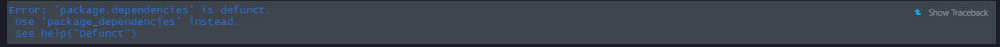

Package version control
Practice code
Before we start…
Step 1. Where are our packages located?
.libPaths()## [1] "C:/Users/darth/OneDrive - CIDE/Tercer Semestre-DESKTOP-FJT75QH/Data Science/R/Final_versions_Workshop/renv/library/R-4.2/x86_64-w64-mingw32"
## [2] "C:/Users/darth/AppData/Local/Temp/RtmpOC4u9J/renv-system-library"To be more specific, let’s check the location of each one of our packages:
library(tidyverse)
library(knitr)
library(rmarkdown)
# We will use the find.package function:
find.package("tidyverse") ## [1] "C:/Users/darth/AppData/Local/R/cache/R/renv/cache/v5/R-4.2/x86_64-w64-mingw32/tidyverse/1.3.1/fc4c72b6ae9bb283416bd59a3303bbab/tidyverse"find.package("knitr")## [1] "C:/Users/darth/AppData/Local/R/cache/R/renv/cache/v5/R-4.2/x86_64-w64-mingw32/knitr/1.40/caea8b0f899a0b1738444b9bc47067e7/knitr"find.package("rmarkdown")## [1] "C:/Users/darth/AppData/Local/R/cache/R/renv/cache/v5/R-4.2/x86_64-w64-mingw32/rmarkdown/2.16/0f3eaa1547e2c6880d4de1c043ac6826/rmarkdown"Quick note about dependencies: they are the code ran by the packages. People can modify them to improve a package and reduce bugs, but these changes may cause them to break and can also take additional disk space and installation time. This is why the dependencies of a package created n years ago might not be the same as the ones the package has today, and most likely, they’ll keep changing in the future.
We can check a package’s dependencies by storing our available packages in a matrix, and then using tools’ package.dependencies function:
library(tools)
packs <- available.packages()
tools::package.dependencies(packs, check = T, depLevel = c("Depends"))
Notice the error message when we try to use package.dependencies. Fortunately, there is a newer version:
tools::package_dependencies("tidyverse", packs)
tools::package_dependencies("knitr", packs)
tools::package_dependencies("rmarkdown", packs)
Now we can see the dependencies and subpackages included in our packages, but…
Can we do anything to preserve our packages and their dependencies, so they keep working in the future?
YES!!! WELCOME TO
renv
2. Activate renv
library(renv)
renv::init()renv is now running into our project and is located in
the same directory as our R file. It has created new files in our
directory:
- renv (library)
- renv.lock (lockfile)
- .Rprofile (file)
So, where are our packages and dependencies now?
.libPaths()## [1] "C:/Users/darth/OneDrive - CIDE/Tercer Semestre-DESKTOP-FJT75QH/Data Science/R/Final_versions_Workshop/renv/library/R-4.2/x86_64-w64-mingw32"
## [2] "C:/Users/darth/AppData/Local/Temp/RtmpOC4u9J/renv-system-library"renv::dependencies()## Finding R package dependencies ... Done!Our packages repository and their dependencies are now part of our
project, and our project will locate its packages in the
renv folder from now on.
Before going further: Restart RStudio and check how the
start info has changed. We can also use renv::project to
check where is the project we are working on.
renv::project()## [1] "C:/Users/darth/OneDrive - CIDE/Tercer Semestre-DESKTOP-FJT75QH/Data Science/R/Final_versions_Workshop"3. Manipulating renv
3.1 Saving the current project packages:
renv::snapshot()## * Lockfile written to 'C:/Users/darth/OneDrive - CIDE/Tercer Semestre-DESKTOP-FJT75QH/Data Science/R/Final_versions_Workshop/renv.lock'.renv takes automatic snapshots of our project. If for
whatever reason you would need to disable it, you can do it with the
following function:
getOption("renv.config.auto.snapshot") ## NULLoptions(renv.config.auto.snapshot = FALSE)To reactivate it:
options(renv.config.auto.snapshot = TRUE)3.2 Retrieve the packages stored in the renv.lock
renv::restore()## * The library is already synchronized with the lockfile.3.3 We can also check the status of our stored packages and compare them with R’s versions
renv::status()## * The project is already synchronized with the lockfile.3.4 If you ever need to update a package stored in renv, you can use the update(function)
renv::update(packages = "tidyverse", library = "/IDS-Workshop_Working_Material.Rproj/renv/library/R-4.2/x86_64-w64-mingw32")## * Checking for updated packages ... Done!
## * All packages appear to be up-to-date.Also, if you know a specific version you would like to install, you
can do it with the renv:install function
renv::install("tidyverse@1.3.1") # tidyverse current version is 1.3.2## Installing tidyverse [1.3.1] ...
## OK [linked cache]# So, what's changed?
renv::status() ## * The project is already synchronized with the lockfile.renv::snapshot()## * Lockfile written to 'C:/Users/darth/OneDrive - CIDE/Tercer Semestre-DESKTOP-FJT75QH/Data Science/R/Final_versions_Workshop/renv.lock'.4. Version Control
Last but not least, if you are working with version control you can check the history of the changes made in your renv library
renv::history()## $author_date
## POSIXct of length 0
##
## $committer_date
## POSIXct of length 0# Notice the commits and their subjects.Further Practice:
- Clone this repository: https://github.com/Rpita623/Movie-Recommendation-System-using-R_Project
- Open the rmd file
- Before installing the packages call renv and initialize it